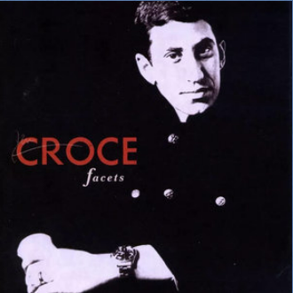
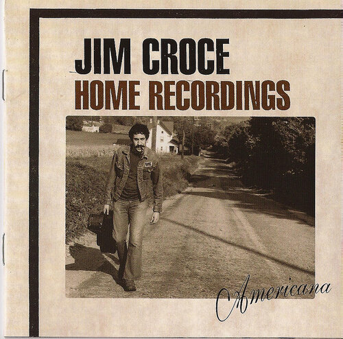
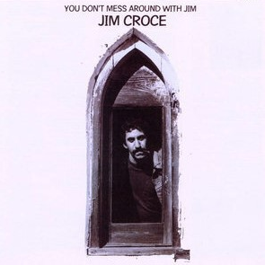
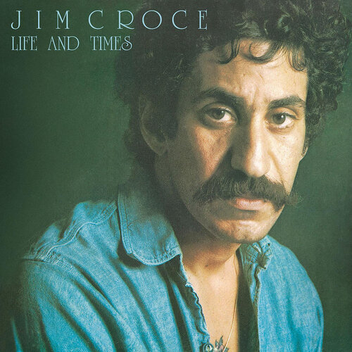
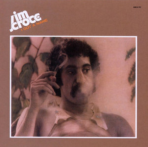

About
James Joseph Croce (January 10, 1943 – September 20, 1973) was an American folk and rock singer-songwriter.
Between 1966 and 1973, he released five studio albums and numerous singles.
During this period, Croce took a series of odd jobs to pay bills while he continued to write, record, and perform concerts.
After Croce formed a partnership with songwriter and guitarist Maury Muehleisen, his fortunes turned in the early 1970s.
Croce's breakthrough came in 1972; his third album, You Don't Mess Around with Jim, produced three charting singles,
including "Time in a Bottle", which reached No. 1 after Croce died. The follow-up album, Life and Times,
included the song "Bad, Bad Leroy Brown", which was the only No. 1 hit he had during his lifetime.
On September 20, 1973, at the height of his popularity and the day before the lead single to his fifth album I Got a Name was released,
Croce and five others died in a plane crash. His music continued to chart throughout the 1970s following his death.
Croce's wife and early songwriting partner, Ingrid, continued to write and record after his death,
and their son A. J. Croce became a singer-songwriter in the 1990s.
- Wikipedia
Popular Songs
Here is a list of some of Croche's most popular songs:
- Time in a Bottle
- Operator
- I'll Have To Say I Love You In a Song
- Bad, Bad Leroy Brown
- You Don't Mess Around With Jim
- I Got a Name
- Photographs and Memories
Albums
| Album Cover | Name | Date of Release |
|---|---|---|
|  | Facets | 1966 |
|  | Home Recordings | January 1969 |
|  | You Don't Mess Around With Jim | April 1972 |
|  | Life and Times | July 1973 |
|  | I Got a Name | December 1973 |
Links
To learn more, click on these links.
More Info Wikipedia Official Website